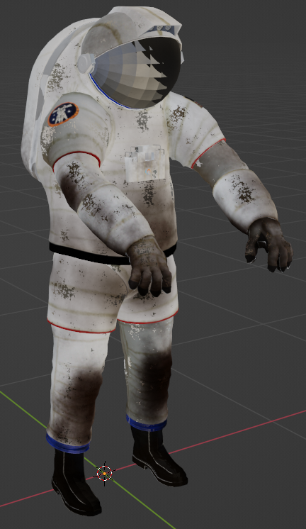
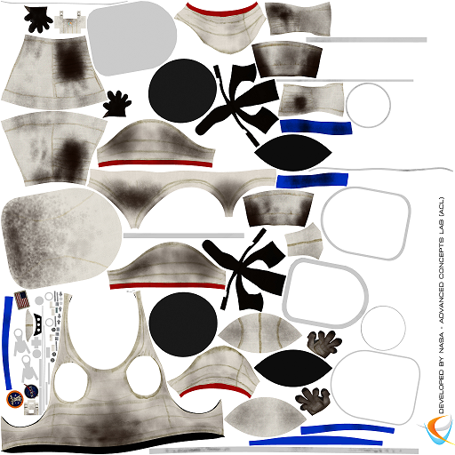
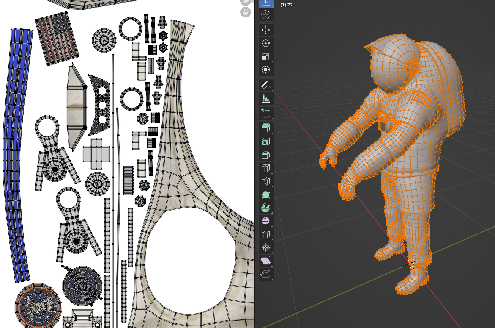
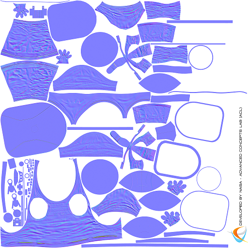

Instructions for you to follow in this document will be highlighted in blue.
Don't forget to cite your sources!
When we draw a particular pixel of a square on our cube (or triangle on the bunny model), we need to figure out where on the square this pixel is, so we know what pixel of the texture to read. Luckily our solve_pixel_t function already calculates these u and v coordinates! We just need to capture these values and return them from the function as well.
We will return these several values by creating an object with the attributes .t, .u, and .v, which will be set to the appropriate values. {t:1, u:2, v:3} is an object, which we can store in a variable with var solution = {t:1, u:2, v:3}, and solution.t will evaluate to 1, solution.u will evaluate to 2, and solution.v will evaluate to 3.
Complete the following:
draw_persp_cube_zbuff, based on your draw_persp_bunny_zbuff function (and draw_persp_cube).
minx etc. to include the extra vertex.
solve_pixel_t function to solve_pixel, updated in the following way:
solve_pixel so that instead of requiring u + v < 1, require u and v < 1.
solve_pixel return {t:answer.x,u:answer.y,v:answer.z}. This creates a new object that has the desired t, u, and v attributes. You could also return {t:t, u:u, v:v}. On the left of the :s are the names of the attributes (strings) and on the right are the values they are set to.
draw_persp_cube_zbuff function, replace var t = solve_pixel_t(x,y,w0,w1,w2) with var answer = solve_pixel(x,y,w0,w1,w3). We replace w2 with w3 because we're capturing the vectors that form the sides of our square: w1-w0 and w3-w0.
t with answer.t
set_rgba call to set the red value based on answer.u and green value based on answer.v, and set blue to 0. You'll need to rescale these values. answer.u and answer.v go from 0 to 1 and the rgb values are from 0 to 255.
When you call set_rgba, you have access to the following variables:
Your exact conversions may vary if you've zoomed in or out.
vec_length([t*x,t*y,t]): the distance from the camera to the pixel
Date.now(): the number of milliseconds since January 1, 1970 00:00:00 UTC
new Date().getSeconds(): number of seconds since the beginning of the current minute. See here for various other time-related values you have access to.
In order to get animations working properly, you will need to constantly recalculate the scene. You can call a function at a regular interval using setInterval.
vn: the normal vector to the face, from which you can determine (with vc):
continue;).
Writing our images pixel-by-pixel is expensive and complicated, but here's where this technique shines: most graphical effects can be achieved with some relatively simple calculations at this step, including:
Indeed, nearly every graphical effect can be achieved with a combination of this, some advanced math, several render passes, and manipulating the vertex coordinates (which we could do earlier in our draw_persp_cube_zbuff function.
We will experiment with some of these effects, and you are welcome to experiment with more, but we will come back to the rest after we have learned to program in the shader language GLSL: a specialized language for writing programs for your GPU. The GPU is specially designed for the fact that these pixel-by-pixel computations are:
We can draw graphs of functions on our surface to get various effects:
Complete the following:
set_rgba and replace it by:
surfx and surfy which are answer.u and answer.v rescaled using convert_a_to_b to go from -5 to 5 (instead of 0 to 1).
if statement to set a pixel to green if surfy == Math.sin(surfx), and blue otherwise.
if statement to check if Math.abs of the difference between surfy and Math.sin(surfx) is less than .1
We can use the sine function to produce a repeating pattern.
Complete the following:
set_rgba call to set red to 255*Math.sin(answer.u*30) and green to 255*Math.sin(answer.v*30)
Complete the following:
set_rgba call to set red to 255*Math.sin(x) and green to 255*Math.sin(y).
A common tool in computer graphics is to have part of a mesh be completely transparent, based on a formula or a texture image. The formula or texture image can contain a high level of complexity, but the computer only has to deal with a small number of triangles.
Complete the following:
continue;.

Reading image files is a challenge for Javascript because:
While there are better ways of solving these problems, we will be using the simple solution of including the texture as an image in our webpage and waiting for the page to load.
Complete the following:
<img src = "https://trkern.github.io/cat275x275.png" id="cat" crossorigin="">
cat_imagedata
load_cat():
var ctx = document.getElementById("canvas").getContext("2d");This function draws the contents of the
ctx.drawImage(document.getElementById("cat"),0,0);
cat_imagedata = ctx.getImageData(0,0,275,275);
<img id="cat"> in the webpage to the canvas, then writes this data to the cat_imagedata variable.
load_cat(); to your <body>'s onload property.
set_rgba call within your draw_persp_cube_zbuff function.
get_rgba to get the rgba values you'd like to draw to the canvas at that pixel.
set_rgba to set those rgba values to the canvas.
It is very tedious and inefficient to have a separate image file for each face of a 3d model. In fact, it is common for a 3d model to have a single texture image. For instance, take this space suit model from NASA:

The entire texture is stored in a single image:

Each vertex then keeps track of its corresponding location on the texture image, so the pixel shader can determine what part of the texture to look at.

This 3d model comes with a wide variety of images, including the normal map below. Each pixel of the normal map keeps track of the x, y, and z coordinates of a true normal vector relative to the surface. The main color you're seeing is (128,128,255). Each color gets remapped to the range from -1 to 1, so this color represents the vector (0,0,1): a vector straight out of the surface. This normal map data gets used when calculating lighting effects to give the illusion of much higher detail with fewer vertices and faces.

We will explore these effects once we start programming in GLSL, which has a number of built-in features that make these easier to implement.